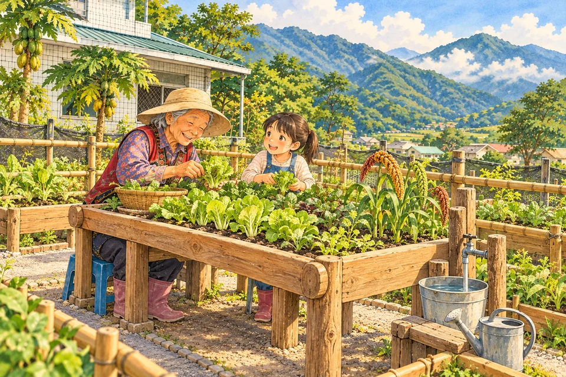

留下一顆種籽
老小米，繼續長大。
找回在地小米與傳統野菜種籽，記下名字、來源與種法，讓種籽有人留、有人種。
老品種小米怎麼種？野菜怎麼認？阿粨的葉子怎麼折？
我們想把這些土地上的智慧留下來，
也讓熟悉農事的長輩，有一個輕鬆種菜、有人作伴的地方。
找回在地小米與傳統野菜種籽，記下名字、來源與種法，讓種籽有人留、有人種。
整理台坂與啦里吧兩站既有菜園，青年出力、長輩指導，孩子一起觀察作物長大。
做一道小米或野菜料理，辦一場小型共食，讓共耕的故事在一桌熱飯裡繼續。
點一片小葉子，看看這個計畫
想在部落裡種下哪些改變。
拜訪熟悉農事的耆老，盤點小米種源與傳統野菜，記錄母語名稱、栽種方式與生長習性；品種名稱與來源經耆老核對後再確認。
建立種籽清冊，記錄來源、名稱、日期與保管人，不同來源分批保存，讓作物一代代延續。
預計完成：種籽清冊 1 份、至少 1 批具來源紀錄的小米種籽場勘台坂與啦里吧兩站既有菜園，確認使用同意、日照、水源與行走安全，再配置作物區、友善操作區、休息區與工具收納。
小規模、可維護，不擴大開墾；善用枝葉堆肥，讓自然材料回到土壤。
預計完成：2 處既有菜園友善整備（作物區、操作區、休息區）參考樂齡高床菜園概念，依長輩身高、坐姿與輔具需求，配置友善畦床或少量植箱，減少彎腰與蹲跪的負擔。
聞聞葉子的香氣、摸摸土、聊聊天，讓園藝成為有陪伴的日常活動。
預計完成：兩站各有友善操作區與輪值表，結合文健站日常照顧由長輩擔任土地導師，帶大家播種、間苗、照料與採收，也分享傳統飲食與料理手藝。
青年拍下工法，孩子畫成觀察日記，把母語與田間故事整理成圖文紀錄。
預計完成：在站課程 12 場、兩站合編圖文紀錄 1 份（至少 6 則主題）計畫尾聲辦一場聯合成果分享，約 30 人，設 2–3 個簡易體驗攤位，讓長輩當關主，邀請大家認種籽、聞野菜、看紀錄。
以小米或野菜料理小型共食，一起吃飯，也一起聽種菜的故事。
預計完成：聯合分享 1 場、2–3 個體驗攤位、約 30 人共食
設計目的是減輕農事負擔；高度與淨空仍須實地試用。園藝活動提供日常陪伴與感官體驗。
預定於民國 116 年（2027 年）3 月 1 日至 10 月 31 日執行，兩站共用一套課綱，依作物時序安排。
場勘台坂、啦里吧兩站菜園，訪談 3–5 位耆老，記錄種籽與農事故事，兩站各辦 1 場尋種課。
兩站各辦 4 場整備播種、作物照護、野菜文化與留種示範，長輩指導、青年協作、學童參與。
9–10 月兩站各辦料理與成果整理課，再辦 1 場聯合成果分享，共 13 場。
預計約 30 人參加，以小米或野菜料理小型共食，邀大家看看種籽與紀錄，也聽聽長輩的故事。
成果活動的日期、地點將依執行安排另行公告。以上皆為提案預期目標與規劃值，尚非已完成成果，場次與人數待兩站確認。
預計核心服務約 26–45 人：核心長輩 15–25 人（台坂 5–10 人、啦里吧 10–15 人）、青年與婦女協作 6–10 人、學童 5–10 人。活動服務量至少 120 人次：12 場在站課程約 90 人次，加聯合成果分享約 30 人次。同一人參加多次活動，會累計為不同人次。
由長輩擔任農事導師，青年協助整地與紀錄，學童適齡參與觀察與學習；所有人員先確認意願。
依合併方案初稿之八項預算呈現，單價為估算。
實際支用與核銷依核定內容及適用規定辦理。
計畫結束後，兩站分別確認菜園管理、農具與種籽保管人，排定下一季播種與維護，把共耕放進日常；持續累積紀錄，作為後續規劃的基礎。
如果你也期待這樣的台坂，
歡迎認識並支持第 3 桌的提案。